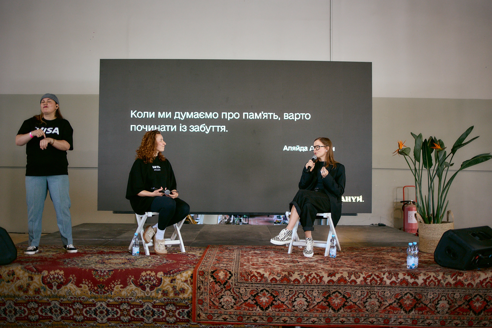
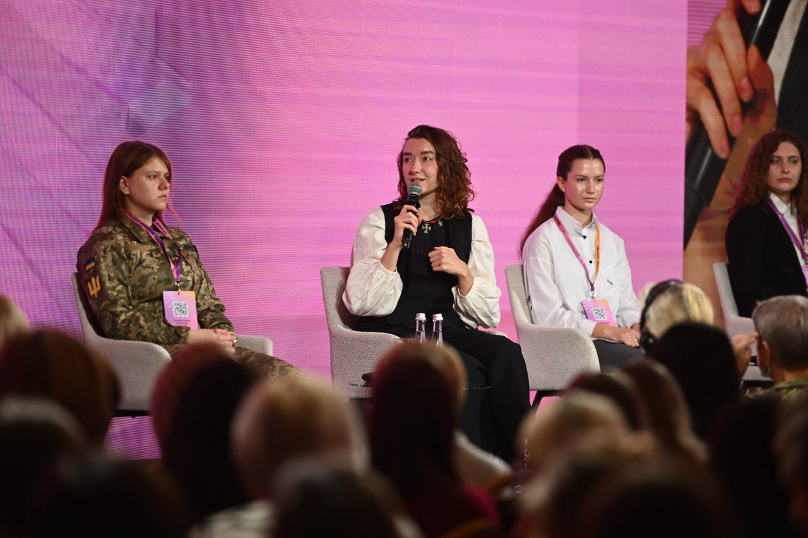
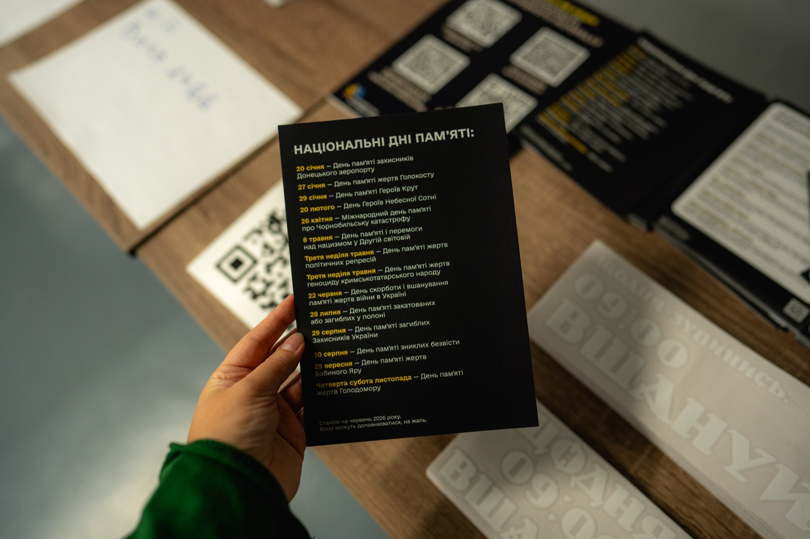

Співпраця з бізнесами
Допомагаємо бізнесу інтегрувати культуру памʼяті у свої комунікації. Проводимо консультації, аудити, лекції та сесії, щоб компанії могли говорити про війну, втрати й памʼять.

А як зробити памʼять видимою у своєму бізнесі?
До цього питання часто приходять компанії та організації. У більшості є чоловіки і жінки, які пішли до війська. І є ті, хто загинули. І також є ті, чиї життя забрала російська атака на робочому місці. Сьогодні це частина корпоративної соціальної відповідальності на рівні з ветеранською політикою.
Чим ми можемо бути вам корисні:
Дорожня карта для бізнесу, аби впровадити Хвилину мовчання

Дорожня карта для бізнесу – це покрокова інструкція, як бізнес може вбудувати Хвилину мовчання в свої процеси, аби підтримати тих, хто втратив, та віддати шану співробітникам та всім загиблим.
Корисні матеріали зібрані в одній теці: «Хвилина мовчання для бізнесу (відкриється в новій вкладці)».
-
Дорожня карта Хвилини мовчання для бізнесу (відкриється в новій вкладці) Покрокова інструкція, як впровадити Хвилину мовчання в компанії.
-
Звук-оголошення Хвилини мовчання (відкриється в новій вкладці) Готовий запис, яким можна скористатися одразу. Хочете оголошення під ваш бізнес? Напишіть нам у Telegram @moment_of_honor (відкриється в новій вкладці) або на пошту momentofhonorukraine@gmail.com
-
Постери про Хвилину мовчання (відкриється в новій вкладці) Кольори можна змінити відповідно до вашого корпоративного брендбуку.
-
Банери для сайту (відкриється в новій вкладці) Щоб запровадити Хвилину мовчання на ваших ресурсах. Готовий код є в наших партнерів із Work.ua: work.ua/minute-of-silence (відкриється в новій вкладці)
Комунікаційний гайд для бізнесів та організацій про комунікацію у дні обстрілів та памʼятні дні

Цей документ допоможе бізнесу зрозуміти, як комунікувати в моменти, коли слова даються найважче, як бути чесним, при цьому не нашкодивши і не знецінивши.
Консультація в темі памʼяті
Якщо ви бізнес (організація) і вам потрібно визначити, як працювати в чутливій темі памʼяті (внутрішньо і зовнішньо), то можете звернутися до нас за консультацією.